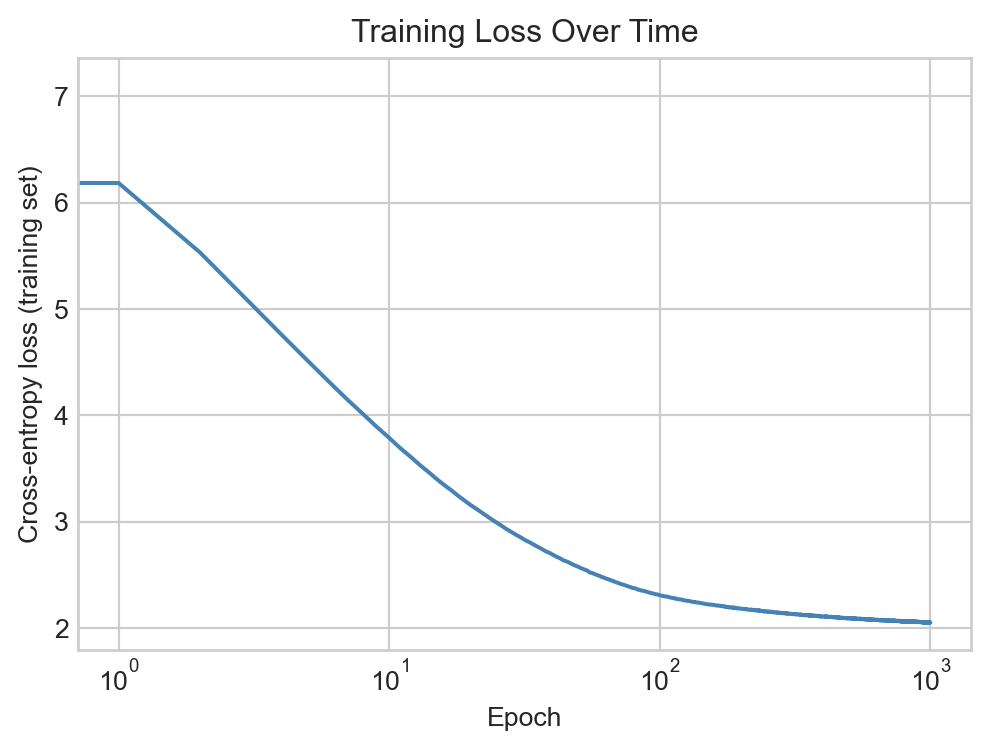

In this set of notes, we’ll begin our discussion of generative language models:
Definition 16.1 (Generative Language Model) A generative language model is a machine learning model whose primary functionality is to produce sequences of useful text.
Our aim by the end of these notes is to have a first, functioning generative language model that can produce text in the style of a piece of sample text. We’ll continue our experiments with the Dr. Seuss data set that we explored last time. Accordingly, our generative language model will be named: Dr. Sus.
Code
import torch from torch import nndevice = torch.device("cuda"if torch.cuda.is_available() else"cpu")import urllibimport pandas as pdfrom sklearn.manifold import TSNEfrom matplotlib import pyplot as plt# for appearanceimport plotly.express as pximport plotly.io as piopio.templates.default ="plotly_white"import sys if"google.colab"in sys.modules:!pip install torchinfo pio.renderers.default ='colab'else: pio.renderers.default ="notebook_connected"from torchinfo import summary
We’ll continue with our experiments on the Dr. Seuss corpus that we studied last time.
url ="https://raw.githubusercontent.com/PhilChodrow/ml-notes-update/refs/heads/main/data/seuss.txt"text ="\n".join([line.decode('utf-8').strip() for line in urllib.request.urlopen(url)])
Pretrained Embedding
Before we introduce our main paradigm and model for text generation, we are going to produce a token embedding for our corpus using the same method as in the previous chapter. The code block below reproduces several steps from the previous chapter, including tokenization, dataset construction, and embedding training.
Code
# construct tokenizerfrom tokenizers import Tokenizerfrom transformers import AutoTokenizer, AutoModelForCausalLM# dataset for embeddingfrom torch.utils.data import Dataset, DataLoaderclass CBOWDataset(Dataset):def__init__(self, tokens, context_length):self.tokens = tokens# dict to remap tokens to contiguous integersself.token_to_idx = {token: i for i, token inenumerate(set(tokens))}self.idx_to_token = {i: token for token, i inself.token_to_idx.items()}# context length is the number of tokens on either side of the target tokenself.context_length = context_lengthself.data = []for i inrange(context_length, len(tokens)-context_length):for j inrange(-context_length, context_length+1):if j !=0:self.data.append((self.token_to_idx[tokens[i+j]], self.token_to_idx[tokens[i]]))self.data.append((self.token_to_idx[tokens[i+j]], self.token_to_idx[tokens[i]]))def__len__(self):returnlen(self.data)def__getitem__(self, idx):return torch.tensor(self.data[idx][0]), torch.tensor(self.data[idx][1])# CBOW embedding modelclass CBOW(nn.Module):def__init__(self, vocab_size, d_model):super().__init__()self.embeddings = nn.Embedding(vocab_size, d_embedding)self.linear = nn.Linear(d_embedding, vocab_size)def forward(self, x): embedded =self.embeddings(x) output =self.linear(embedded)return output# for embedding visualization after trainingdef visualize_embeddings(model, tokenizer, data):# extract the embedding weights weights = model.embeddings.weight# use t-SNE to reduce the dimensionality of the embeddings to 2D tsne = TSNE(n_components=2, random_state=42) embeddings_2d = tsne.fit_transform(weights.detach().cpu().numpy())# make a dataframe for plotly embedding_df = pd.DataFrame(embeddings_2d, columns=["Dim1", "Dim2"]) embedding_df["Token"] = [tokenizer.decode(data.idx_to_token[i]) for i inrange(len(embeddings_2d))]# labeled scatter plot of the embeddings fig = px.scatter(embedding_df, x="Dim1", y="Dim2", text="Token", title="2D Visualization of Token Embeddings") fig.update_traces(textposition='top center') fig.update_layout(xaxis_title="Dimension 1", yaxis_title="Dimension 2") fig.show()import warningswith warnings.catch_warnings(): warnings.simplefilter("ignore") checkpoint ="openai-community/gpt2" tokenizer = AutoTokenizer.from_pretrained(checkpoint)# construct dataset, dataloader, model context_length =5 tokens = tokenizer.encode(text) data = CBOWDataset(tokens, context_length=context_length) dataloader = DataLoader(data, batch_size=32, shuffle=True) vocab_size =len(data.token_to_idx) d_embedding =8 model = CBOW(vocab_size, d_model=d_embedding)# construct training loss and optimizer opt = torch.optim.Adam(model.parameters(), lr=1e-2) loss_fn = nn.CrossEntropyLoss() model.to(device)# training loopfor epoch inrange(5):for X_batch, y_batch in dataloader: X_batch, y_batch = X_batch.to(device), y_batch.to(device) opt.zero_grad() output = model(X_batch) loss = loss_fn(output, y_batch) loss.backward() opt.step()# take a look at the embeddings visualize_embeddings(model, tokenizer, data)
/Users/philchodrow/opt/anaconda3/envs/cs451/lib/python3.10/site-packages/tqdm/auto.py:21: TqdmWarning: IProgress not found. Please update jupyter and ipywidgets. See https://ipywidgets.readthedocs.io/en/stable/user_install.html
from .autonotebook import tqdm as notebook_tqdm
Token indices sequence length is longer than the specified maximum sequence length for this model (11051 > 1024). Running this sequence through the model will result in indexing errors
Figure 16.1
Importantly, we’re now able to extract the embedding layer from our CBOW model. We can then use the same embedding layer in a future model, without the need to train it again. Since we don’t need to train the embedding further, we can turn off tracking of gradient information for this layer.
embedding = model.embeddingsembedding.requires_grad_(False)embedding(torch.tensor([4])) # ex: embedding lookup for a single token
The current dominant paradigm in generative language modeling is called next-token prediction. The idea is to train a model to predict the next token in a sequence of tokens, given the previous tokens:
Definition 16.2 (Next-Token Prediction) In next-token prediction, we treat a sequence of tokens \(t_1,t_2,\ldots,t_k\) as a set of features, and attempt to use them to predict the identity of the next token \(t_{k+1}\) in the sequence.
NoteNext-Token Prediction is a Classification Problem
Since the possible values of a given token come from the discrete set of token ids in the vocabulary, we can view next-token prediction as a classification problem: given a sequence of tokens, we want to classify the identity of the next token.
Context Length and N-Gram Models
There are many different kinds of models which aim to solve the next-token prediction problem. For this chapter, we’ll focus on a simple class of models called n-gram models, which use a fixed number of previous tokens as features to predict the next token.
Definition 16.3 (Context Length, N-Gram Models) The context length is the number of previous tokens that we use as features to predict the next token in a next-token prediction problem.
A model that uses a fixed context length of \(n\) is often called an (n+1)-gram model.
For example, a model with context length 1 is often called a bigram model, since it encodes relationships between pairs of tokens (one feature, one target). A model with context length 2 is often called a trigram model, since it encodes relationships between triples of tokens (two features, one target).
Datasets for Next-Token Prediction
We’re now ready to implement a data set for next-token prediction using an \(n\)-gram model. To do this, we need to organize our sequence of token ids into a data set of training examples, in which each example consists of a sequence of tokens as features and the next token as the target. We can implement this using a custom Dataset class in PyTorch. In the __init__ method we save several instance variables and tokenize the input text, while in the __len__ and __getitem__ methods we implement the logic for how to index into the data set to get the features and target for each example.
For convenience purposes only, we’ve arranged for the dataset to return both the token ids and the corresponding text for each example. In practice, only the token ids are needed for training – the text is just for debugging and our own entertainment.
class SeussDataSet(Dataset):def__init__(self, tokens, context_length =5): self.context_length = context_lengthself.tokens = tokensself.vocab_length =len(set(tokens))self.idx_to_token = {i: token for i, token inenumerate(set(tokens))}self.token_to_idx = {token: i for i, token inenumerate(set(tokens))}def__len__(self):1returnlen(self.tokens) -self.context_lengthdef__getitem__(self, key):2 target_token =self.tokens[self.context_length + key] target = torch.tensor(self.token_to_idx[target_token])3 feature_tokens =self.tokens[key:(self.context_length + key)] features = [self.token_to_idx[token] for token in feature_tokens] feature_tensor = torch.tensor(features, dtype=torch.long)return feature_tensor.to(device), target.to(device)
1
The number of training examples is equal to the total number of tokens minus the context length, since we need at least context_length tokens to form the features for the first example.
2
The target token is the token that follows the context in the sequence.
3
The features are the tokens that form the context.
For convenience later, we’re also going to implement a simple class that decodes the tokens. The entire puprose of this class is to wrap up the tokenizer and the token_to_idx map used by our dataset and model; we’ll use this when we get to text generation.
class SeussDecoder: def__init__(self, dataset, tokenizer):self.dataset = datasetself.idx_to_token = dataset.idx_to_tokenself.token_to_idx = dataset.token_to_idxself.tokenizer = tokenizerdef decode(self, token_indices): tokens = [self.idx_to_token[idx] for idx in token_indices]returnself.tokenizer.decode(tokens)
Let’s instantiate each class:
context_length =10data = SeussDataSet(tokens, context_length = context_length)decoder = SeussDecoder(data, tokenizer)print(f"Number of training examples: {len(data)}")print(f"Vocabulary size: {data.vocab_length}")
Number of training examples: 11041
Vocabulary size: 1589
Now that we’ve constructed the data set, we can query it just by indexing:
for i inrange(5): X, y = data[i] X_text = decoder.decode(X.tolist()) y_text = decoder.decode([y.item()])print(f"Example {i:<2}: {X.tolist()} -> {y}")print(" "*10+":", end ="")print(repr(X_text), end ="")print("-->", end ="")print(repr(y_text))
Example 0 : [188, 1248, 95, 76, 869, 60, 60, 1069, 593, 7] -> 418
:'The Cat in the Hat\n\nBy Dr.'-->' Se'
Example 1 : [1248, 95, 76, 869, 60, 60, 1069, 593, 7, 418] -> 433
:' Cat in the Hat\n\nBy Dr. Se'-->'uss'
Example 2 : [95, 76, 869, 60, 60, 1069, 593, 7, 418, 433] -> 60
:' in the Hat\n\nBy Dr. Seuss'-->'\n'
Example 3 : [76, 869, 60, 60, 1069, 593, 7, 418, 433, 60] -> 60
:' the Hat\n\nBy Dr. Seuss\n'-->'\n'
Example 4 : [869, 60, 60, 1069, 593, 7, 418, 433, 60, 60] -> 188
:' Hat\n\nBy Dr. Seuss\n\n'-->'The'
Let’s add a data loader so that we can train the model with stochastic optimization:
A single batch of data from the loader consists of a tensor of features (token ids) and a tensor of targets (token ids), along with the corresponding text for each example in the batch:
X_batch, y_batch =next(iter(loader))print(f"Batch of features (token ids): {X_batch.shape}")print(f"Batch of targets (token ids): {y_batch.shape}")
Batch of features (token ids): torch.Size([256, 10])
Batch of targets (token ids): torch.Size([256])
Next-Token Prediction with Neural N-Gram Models
We’re now ready to train a simple neural network to perform \(n\)-gram next-token prediction with one-hot encoded features. For our first approach, we are going to use a simple \(n\)-gram model, composed only of the pretrained embedding layer, a flattening operation, and some linear processing layers.
Note that our embedding layer in this model is not a new embedding layer (nn.Embedding, but rather the pretrained embedding that we trained with CBOW).
fig, ax = plt.subplots(figsize = (6, 4))ax.plot(loss_history, color ="steelblue")ax.set_xlabel("Epoch")ax.set_ylabel("Cross-entropy loss (training set)")ax.set_title("Training Loss Over Time")ax.semilogx()plt.show()

Figure 16.2: Training loss over epochs for the next-token prediction model.
Having trained the model, we can use the forward method to get the model’s predicted scores for the next token:
x, y = data[240]x = x.unsqueeze(0).to(device) # add batch dimension and move to deviceoutput = model(x) # add batch dimension
A simple method for text generation is just to predict the token that receives the highest score from the model.
t = torch.argmax(output, dim=1).item()print(repr(decoder.decode(x.tolist()[0])), end ="")print("-->", end ="")print(repr(decoder.decode([t])))
' good fun that is funny!"\n\n"I'-->' she'
Deterministic prediction always eventually produces text that repeats itself, so modern approaches typically inject some amount of tunable randomness into the generation process.
Stochastic Generation via Boltzmann Sampling
In stochastic prediction, we treat the scores as defining a probability distribution over the possible next tokens, and we sample from this distribution to get our prediction. The most common choice of probability distribution is the Boltzmann distribution.
Definition 16.4 (Boltzman Distribution, Temperature) Given a vector \(\mathbf{s}\in \mathbb{R}^k\) of scores for each of \(k\) possible next tokens, the Boltzmann distribution is a probability distribution over the \(k\) tokens defined by the scores \(\mathbf{s}\) and a parameter \(T > 0\) called the temperature. It has formula
Larger values of \(T\) lead to more random predictions, while smaller values of \(T\) lead to more deterministic predictions. In the limit as \(T \to 0\), the Boltzmann distribution converges to a distribution that puts all of its mass on the token with the highest score, which is exactly what deterministic prediction does. In the limit as \(T \to \infty\), the Boltzmann distribution converges to the uniform distribution over all tokens, which corresponds to completely random prediction.
Random predictions are sometimes called “creative” among certain enthusiasts.
Since the \(T \to 0\) limit of the Boltzmann distribution corresponds to deterministic prediction, we can implement deterministic prediction using the boltzmann_prediction function by setting the temperature to a very small value.
Let’s try out the Boltzmann prediction function with different values of the temperature parameter:
X, y = data[2000]preds = model.forward(X.unsqueeze(0)).squeeze(0)print(f"Feature text: '{repr(decoder.decode(X.tolist()))}'")for temp in [0.001, 0.5, 2.0]: print(f"\nPredictions with temperature {temp}:")for _ inrange(3): y_pred = boltzmann_prediction(preds, temperature = temp)print(f"Temperature: {temp}, Predicted token: {y_pred}, {decoder.decode([y_pred])}")
Feature text: ''And you take them away!"\n\n"Oh''
Predictions with temperature 0.001:
Temperature: 0.001, Predicted token: 1282, dear
Temperature: 0.001, Predicted token: 1282, dear
Temperature: 0.001, Predicted token: 1282, dear
Predictions with temperature 0.5:
Temperature: 0.5, Predicted token: 1282, dear
Temperature: 0.5, Predicted token: 1282, dear
Temperature: 0.5, Predicted token: 351, look
Predictions with temperature 2.0:
Temperature: 2.0, Predicted token: 167, not
Temperature: 2.0, Predicted token: 780, cannot
Temperature: 2.0, Predicted token: 282, no
For very low temperatures, the predictions are essentially deterministic (we always generate the same prediction), while for higher temperatures, the predictions become more and more random.
Recurrent Text Generation
To generate text with our trained model, we start with an initial sequence of tokens, and then repeatedly apply the model to predict the next token, appending each predicted token to the sequence and using the updated sequence as the new input for the next prediction.
Figure 16.3: Illustration of recurrent text generation using word-level tokens and a context length of 2. Each newly-generated token is added to the sequence. The oldest token in the context is dropped, so that the context length remains fixed at 2.
The following function implements this logic for generating text with a trained \(n\)-gram model.
Take the most recent context_length tokens from the generated sequence to form the input for the model.
2
Pass the input through the model to get the predicted scores for the next token.
3
Use the boltzmann_prediction function to sample the next token from the predicted scores.
4
Append the predicted token to the generated sequence.
Let’s use our function to generate text at a few different temperatures. As we might expect, when the temperature is high, the text is essentially random.
start ="Fox socks. box Knox. Knox in box."tokens = tokenizer.encode(start)start_tokens = [decoder.token_to_idx[token] for token in tokens]
Fox socks. box Knox. Knox in box.withH new easy andck comes down withCl you leak!green? Mr and blocks did easily one leak may will bump'll HILL very are air come and aSome, are go
Where!And a bump of her with down He top
On the other hand, when the temperature is very low, the text quickly locks into a repetitive pattern.
Fox socks. box Knox. Knox in box.
This tricks,
or a
And grow Mike ALL.or the grabbed,
"
And the Grinch Grinch thought, tiny Who beneath,
", ran,
One, drink,
Yes.that't than
At intermediate values, we recover something that is still very chaotic but which also contains occasional flashes of coherent task:
Fox socks. box Knox. Knox in box.
This tricks,,
or the mail, ring Jake.Said a hot. Look,
Waansites has cans.
You will not them them
Say,, do not like them them.
Not.
Further experiments with the model training and temperature parameter may yield more or less coherent text.
What’s Next?
You may observe that none Dr. Sus’s writings are particularly impressive in terms of their coherence or resemblance to the source material. This reflects:
A very small training data set: just the text of four short children’s books.
A simple model architecture, with low embedding dimension and no hidden layers.
Perhaps most importantly, a nonspecialized model architecture that does not account for any of the distinctive structural features of language. An especially important feature we’re ignoring here is that language is sequential and recombinant – not only does the order of tokens matter, but the same token can have different meanings in different contexts. There are a variety of model architectures designed to account for the distinctive structural features of sequence data like language, especially recurrent neural networks and transformers. We’ll discuss models specialized for sequence modeling in the next chapter.